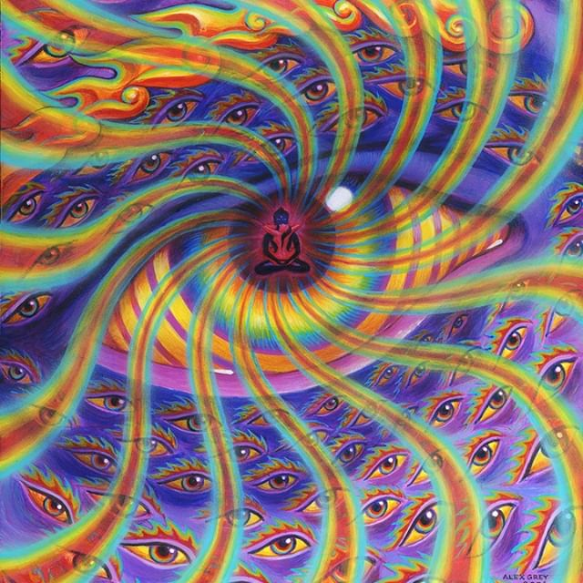
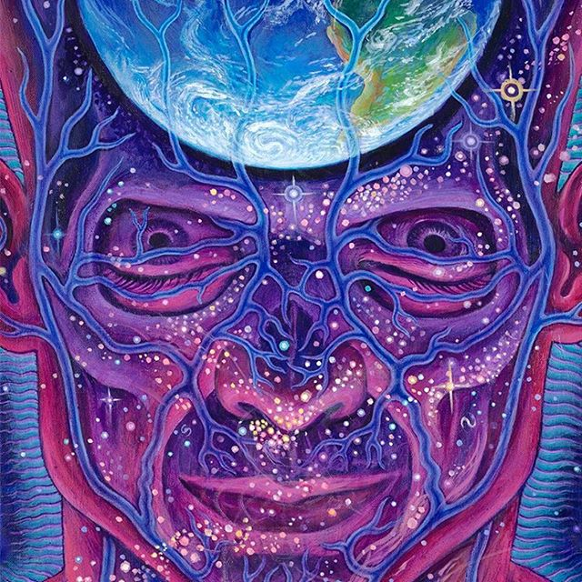
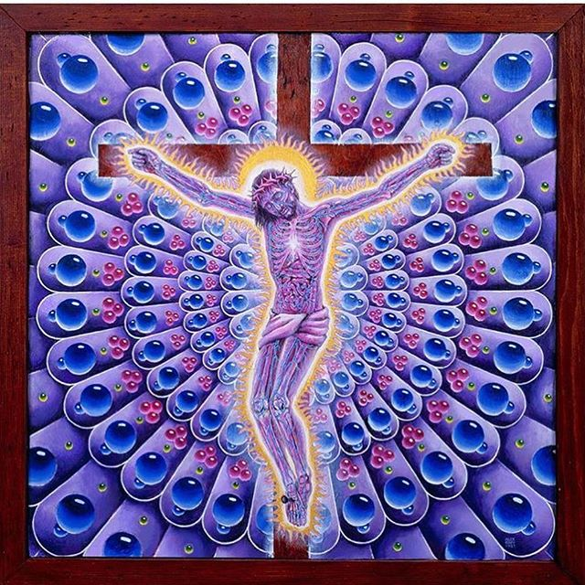

Art & Wisdom
"If you can see, you have nothing else to do, because in that seeing there is all discipline, all virtue, which is attention. . . . Then where you are, you have heaven: then all seeking comes to an end. . . . Real seeing brings with it this extraordinary elimination of time and space."
—Krishnamurti
.
Featured art: "The Seer," by Alex Grey,
"I contemplate God as all that is arising — the Great Perfection of this and every moment."
—Ken Wilber
.
Featured art: "Sol Invictus," by Alex Grey, 2015, acrylic on linen.
Available as a limited edition fine art print >> https://shop.cosm.org/collections/prints/products/sol-invictus-paper-print

At CoSM, this Saturday, Evan Worldwind & Yahoteh Kokayi, lead a workshop on Energy Cultivation. Featuring Tai/chi kung meditations, discussions, and songs. Sign up today at https://cosm.org
.
Featured art: "Liberation through Seeing," by Alex Grey, 2004, oil on wood panel.

Endless gratitude for our only home Earth. May we awaken to the divinity of Nature and save our only home and lifeweb, imagining and implementing sustainable strategies worldwide for tackling climate change and bioremediation. Earthday 2007 was our first visit to the magical land of CoSM. Allyson and I knew it was “the place” immediately - ten feet in the driveway. Hadn’t seen anything yet. Just knew and watched as turkeys mated before us in the driveway. At CoSM we have initiated a Permaculture program with Delvin Solkinson a master instructor who has studied the land here for years. Come learn from Nature’s lessons with him @visionary_permaculture
A hero bows down, kneeling with arms upraised in prayerful praise to Earth Mother.
Atlas invites us to confront the gravity of our relationship with the planet.
Available as a Limited Edtion,
Signed & Numbered
Fine Art Print by, Alex Grey
10% OFF TODAY ONLY!
Special earth day offerings happening now in the CoSM Shop!
Shop>> https://shop.cosm.org/collections/highart-collection/products/eco-atlas-paper-print
Video by: @teej_vision
Music: “Ishma” by @simonhaiduk
✨The 7 Lights of Cannabis Wisdom✨
1. THE LIGHT OF UTILITY
Cannabis is nature’s most useful plant, providing hemp fibers for clothing, rope, hemp paper, hemp oil, hemp plastics stronger than steel.
.
.
2. THE LIGHT OF SEXUALITY
The increased sensitivity and aphrodisiacal qualities of cannabis inebriation are undeniable.
.
.
3. THE LIGHT OF HEALTH
The numerous medical applications of cannabis for healing and hemp powder as a complete food are a boon for the body.
.
.
4. THE LIGHT OF LOVE
Cannabis opens the heart and sensitizes us to others.
.
.
5. THE LIGHT OF POETRY
Cannabis allows the flowing tongues of bards contact with new modes of knowing and speaking.
.
.
6. THE LIGHT OF VISION
Opening of the third eye allows the artist in everyone access to the Divine Imagination.
.
.
7. THE LIGHT OF GOD
Ganja smoking Babas, Rastafari, and many others regard cannabis as a sacrament opening us to the highest creative source, allowing us to realize WE ARE THE LIGHT.
Did you know that George Washington, was a hemp farmer?
Comment below with your 4/20 fun facts!
.
.
Video by @teej_vision
Music by @sekayapapaya .
#420 #cannabis #cannabiscommunity #cannabisculture #marijuana #cbd #medicine #hemp #joerogan #visionaryart #visionary #alexgrey #alexgreyart

Good Friday on 4/19. I painted Purple Jesus back in 1987 and unbeknownst to me it became the background for a blotter popular at Grateful Dead concerts. Tim Leary signed some also unbeknownst to me but later I got to meet him at one of my art exhibits. Dr. Leary was the student advisor for Walter Pahnke at Harvard in 1962. The Good Friday experiment was when Pahnke conducted the first Mystical Experience study using psilocybin. This breakthrough study led to many similar studies at Johns Hopkins University and NYU that are helping people recover from PTSD, addiction and depression with psychedelic therapies. Come to CoSM tonight and meet Dr. Anthony Bossis of the NYU Psilocybin studies.